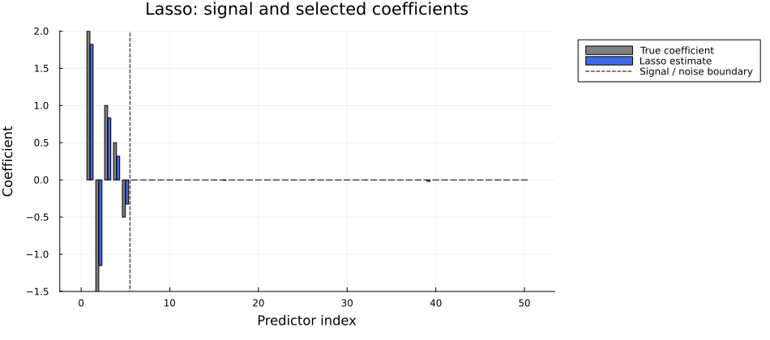

Lasso
When many measurements may explain a response, we often want a small set of useful predictors. The lasso balances prediction error against the sum of coefficient magnitudes. This can set weak coefficients to zero, while shrinking the retained effects. Ordinary least squares has no such preference for a short model.
The figure previews the seeded regression fitted below. The first five predictors carry the signal; the remaining 45 are noise predictors. The estimated heights describe a penalized fit, so they need not equal the true effects.

The lasso minimizes (s/2)‖y − Xβ‖² + λ‖β‖₁ over β, with s = 1 for the raw sum of squares and s = 1/n for the normalized form used on this page. ProximalBase's LeastSquaresLoss(y, X) is half the sum of squares, ‖y − Xβ‖²/2, so s * LeastSquaresLoss(y, X) is the smooth part and NormL1(λ) is the penalty. This page solves the lasso in five ways, each section with its own iterate that starts from zeros: cyclic coordinate descent, proximal gradient descent, coordinate descent on a SparseIterate, consensus ADMM on the same small orthogonal design, and accelerated proximal gradient descent next to proximal gradient descent on a seeded correlated design. Each solution is checked against an independent result, not against the solver's converged flag.
CDSolver accepts this problem on a dense Vector or a SparseIterate, and ProximalGradientDescent and AccProxGradDescent on a dense Vector, with Float32 or Float64 data. ADMMSolver accepts the raw loss with a penalty level of n * λ for exact Float64 data with at least as many observations as coefficients (n ≥ p); it does not accept a wide design, a loss scale or Float32 data. See Supported problems for the combinations that the test suite checks and their limits.
The problem
For a zero-intercept model $y=X\beta+\varepsilon$, we minimize
\[\frac{1}{2n}\|y-X\beta\|_2^2+\lambda\sum_j |\beta_j|.\]
The penalty level $\lambda$ trades data fit against sparsity. Predictor scales matter because the same coefficient penalty acts on each column. We use no fitted intercept; the simulation has mean-zero predictors and noise.
A small problem with orthogonal columns of unequal norms has a closed-form solution: each coefficient is the least-squares coefficient of its column, soft-thresholded at λ / (s ‖X[:, j]‖²). At s = 1/n and λ = 0.1 the solution is [1.7, -0.925].
using LinearAlgebra, Random, ProximalBase, ProximalSolvers
X = [1. 0.; 0. 2.; 0. 0.]
y = [2., -2., .5]
n = length(y)
s = 1 / n
f = s * LeastSquaresLoss(y, X)ProximalBase.Scaled{ProximalBase.LeastSquaresLoss{Float64, Vector{Float64}, Matrix{Float64}, 1, Vector{Float64}}, Float64}(ProximalBase.LeastSquaresLoss{Float64, Vector{Float64}, Matrix{Float64}, 1, Vector{Float64}}([2.0, -2.0, 0.5], [1.0 0.0; 0.0 2.0; 0.0 0.0], [0.0, 0.0, 0.0], Matrix{Float64}(undef, 0, 0), Float64[], Float64[], Float64[], ProximalBase.Scratch(nothing), false), 0.3333333333333333)The function below measures optimality from the data alone. For grad = s Xᵀ(Xβ − y) it returns the largest violation of 0 ∈ grad + λ ∂‖β‖₁: at a zero coefficient the excess of |grad_j| over λ, and at a nonzero coefficient the distance |grad_j + λ sign(β_j)|. It is zero at a minimizer. It is named differently from ProximalBase's exported kkt_violation, which it does not replace, and it takes the data as arguments.
lasso_objective(X, y, s, λ, β) = s * sum(abs2, y - X * β) / 2 + λ * sum(abs, β)
function lasso_kkt_residual(X, y, s, λ, β)
grad = s * (X' * (X * β - y))
maximum(iszero(β[j]) ? max(abs(grad[j]) - λ, 0.0) :
abs(grad[j] + λ * sign(β[j])) for j in eachindex(β))
end;Coordinate descent
CDSolver updates one coordinate at a time.
x_cd = zeros(2)
g = NormL1(.1);Cyclic order and no momentum make the tutorial output reproducible. CDSolver() uses random order and is also reasonable for exploratory fits.
result = solve!(x_cd, f, g, CDSolver(order=:cyclic, momentum=false))
@assert result.converged && result.minimizer === x_cd
@assert isapprox(result.minimum, lasso_objective(X, y, s, 0.1, x_cd); rtol=1e-10)Independent orthogonal-column solution, with unequal column norms.
@assert isapprox(x_cd, [1.7, -.925]; atol=1e-7)
println(result)Results of Optimization Algorithm
* Algorithm: Coordinate Descent
* Minimum: 3.229167e-01
* Passes: 3
* Convergence: true
* largest change in the last pass 0.00e+00 (tolerance 1.66e-07)Proximal gradient descent
ProximalGradientDescent is the cached proximal-gradient algorithm. It solves the same lasso from its own zero start.
x_pgd = zeros(2)2-element Vector{Float64}:
0.0
0.0gradtol = 1e-10 is near the rounding level of the objective, so the solve may end on a computed objective increase (converged = false) unless increases are allowed
options = ProximalOptions(maxiter=2000, ftol=1e-14, xtol=1e-12, gradtol=1e-10,
allow_f_increases=true)
result = solve!(x_pgd, f, g, ProximalGradientDescent(), options)
@assert result.converged && result.minimizer === x_pgd
@assert isapprox(result.minimum, lasso_objective(X, y, s, 0.1, x_pgd); rtol=1e-10)Accuracy is checked separately from the solver's stopping flag.
@assert isapprox(x_pgd, [1.7, -.925]; atol=1e-7)
println(result)Results of Optimization Algorithm
* Algorithm: Proximal Gradient Descent
* Minimizer: [1.6999999996915773,-0.9250000000104999]
* Minimum: 3.229167e-01
* Iterations: 36
* Convergence: true
* |x - x'| < 1.0e-12: false
|x - x'| = 3.35e-10
* |f(x) - f(x')| / |f(x)| < 1.0e-14: true
|f(x) - f(x')| / |f(x)| = 1.72e-16
* |g(x)| < 1.0e-10: false
|g(x)| = 1.03e-10
* objective increased at the last iteration: false
* Reached Maximum Number of Iterations: false
* Reached a limit on the number of calls: false
* Stopped at numerical stagnation: false
* Backtracking steps: 40
* f(x) calls: 77
* ∇f(x) calls: 37
* prox calls: 40Coordinate descent on a SparseIterate
A SparseIterate stores only the active coefficients; the design matrix remains dense. An empty SparseIterate has no active coordinates, and the solver discovers them. With λ = 1 the soft-thresholded first coefficient is zero, so one coefficient is active.
lambda = 1.0
g_sparse = NormL1(lambda);
x_sparse = SparseIterate(2)
result = solve!(x_sparse, f, g_sparse, CDSolver(order=:cyclic, momentum=false))
@assert result.converged && result.minimizer === x_sparse
@assert isapprox(result.minimum, lasso_objective(X, y, s, lambda, Vector(x_sparse)); rtol=1e-10)Soft-thresholding the independent orthogonal-column solution:
@assert isapprox(Vector(x_sparse), [0.0, -0.25]; atol=1e-7)Only the second coordinate is stored as active after compaction.
@assert nactive(x_sparse) == 1 && collect(activecoordinates(x_sparse)) == [2]
println("coefficients = ", Vector(x_sparse), "; active coordinates = ", collect(activecoordinates(x_sparse)))coefficients = [0.0, -0.25]; active coordinates = [2]Consensus ADMM
ADMMSolver alternates the proximal operators of the smooth loss and of the penalty, and monitors how far the two results are from agreeing. It takes the raw loss LeastSquaresLoss(y, X), which has no scale s. Multiplying the normalized objective by n gives
\[\frac12\|y-X\beta\|_2^2+n\lambda\sum_j|\beta_j|,\]
which has the same minimizer. The penalty is therefore NormL1(n * λ), and the minimum that the solver reports is n times the normalized objective of this page.
The loss's proximal operator caches a thin SVD of X inside the loss object on its first call, and later calls and later solves with the same loss reuse it, so one LeastSquaresLoss object belongs to one solve at a time. The solver comparison measures that one-time setup separately from the iterations. This solver path takes exactly a Vector{Float64} iterate, a Matrix{Float64} design and a Vector{Float64} response, with n ≥ p; the 3 × 2 design of this section qualifies. ADM-05 states the rules, and ADM-01 and ADM-02 state the settings, recurrence and stopping tests that every ADMMSolver solve shares.
With orthogonal columns the eigenvalues of XᵀX are 1 and 4. We take ρ = 2, their geometric mean, and ask for tight tolerances. The caller supplies the scaled dual u, so that the result can be seen to refer to it.
lambda_admm = 0.1
f_admm = LeastSquaresLoss(y, X)
g_admm = NormL1(n * lambda_admm)
x_admm, u_admm = zeros(2), zeros(2)
method_admm = ADMMSolver(ρ = 2.0, abstol = 1e-12, reltol = 1e-12)
result = solve!(x_admm, f_admm, g_admm, method_admm, ProximalOptions(maxiter = 10_000); u = u_admm)
println(result)ADMM results (converged)
* Minimum: 9.687500e-01
* Iterations: 69 (138 proximal calls)
* Primal residual: 2.48e-16 (tolerance 3.35e-12)
* Dual residual: 1.26e-12 (tolerance 1.84e-12)
* Penalty: 2.000000e+00The solver returns its status and its own residuals. We do not rely on them for accuracy. The coefficients are compared with the soft-thresholded solution that the orthogonal columns give, and the reported objective, divided by n, with the objective computed from the data. The KKT residual of the lasso uses the same function and the same λ as the other sections.
@assert result.status === :converged && result.converged
@assert isapprox(x_admm, [1.7, -.925]; atol=1e-8)
@assert isapprox(result.minimum / n, lasso_objective(X, y, s, lambda_admm, x_admm); rtol=1e-10)
@assert lasso_kkt_residual(X, y, s, lambda_admm, x_admm) <= 1e-6The result refers to the caller's buffers, and the counters follow the recurrence. A complete iteration makes two proximal calls, and the loss value is evaluated once after the last iteration. At a solution, the scaled dual u times ρ is the negative gradient of the raw loss, Xᵀ(y − Xβ), and the residuals passed their own tests.
@assert result.minimizer === x_admm && result.u === u_admm
@assert result.prox_calls == 2 * result.iterations
@assert ProximalSolvers.f_calls(result) == 1 && ProximalSolvers.grad_calls(result) == 0
@assert result.r_norm <= result.eps_pri && result.s_norm <= result.eps_dual
@assert maximum(abs, result.ρ .* u_admm - X' * (y - X * x_admm)) <= 1e-6Accelerated proximal gradient descent
AccProxGradDescent is accelerated proximal gradient descent. Here it runs next to plain proximal gradient descent with the same options on a seeded design with n = 200 rows, p = 50 columns, correlation 0.9 between neighbouring columns, and λ = 0.02.
rng = Xoshiro(2026)
n_corr, p_corr = 200, 50
X_corr = randn(rng, n_corr, p_corr)
for j in 2:p_corr # neighbouring columns with correlation 0.9
X_corr[:, j] .= 0.9 .* X_corr[:, j - 1] .+ sqrt(1 - 0.9^2) .* X_corr[:, j]
end
beta_true_corr = vcat([2.0, -1.5, 1.0, 0.5, -0.5], zeros(p_corr - 5))
y_corr = X_corr * beta_true_corr .+ 0.1 .* randn(rng, n_corr)
s_corr = 1 / n_corr
f_corr = s_corr * LeastSquaresLoss(y_corr, X_corr)
lambda_corr = 0.02
g_corr = NormL1(lambda_corr)
options_corr = ProximalOptions(maxiter = 10_000, ftol = 1e-14, xtol = 1e-12, gradtol = 1e-10)
beta_apg, beta_pgd2 = zeros(p_corr), zeros(p_corr)
apg = solve!(beta_apg, f_corr, g_corr, AccProxGradDescent(), options_corr)
pgd = solve!(beta_pgd2, f_corr, g_corr, ProximalGradientDescent(), options_corr)
@assert apg.minimizer === beta_apg
@assert isapprox(apg.minimum, lasso_objective(X_corr, y_corr, s_corr, lambda_corr, beta_apg); rtol=1e-10)
@assert isapprox(pgd.minimum, lasso_objective(X_corr, y_corr, s_corr, lambda_corr, beta_pgd2); rtol=1e-10)
@assert lasso_kkt_residual(X_corr, y_corr, s_corr, lambda_corr, beta_apg) <= 1e-6 &&
lasso_kkt_residual(X_corr, y_corr, s_corr, lambda_corr, beta_pgd2) <= 1e-6Reading the coefficient figure
The fitted bars use the accelerated proximal-gradient solution. Closely correlated predictors can partly replace one another: a zero coefficient is a model choice, not proof that its predictor has no scientific role. The zero baseline distinguishes the planted noise predictors from the signal. Recovery error is reported, not used as a support-recovery test.
println("Coefficient recovery error = ", norm(beta_apg - beta_true_corr))
using Plots
primary_figure = bar(hcat((1:p_corr) .- 0.18, (1:p_corr) .+ 0.18),
hcat(beta_true_corr, beta_apg); bar_width=0.34,
label=["True coefficient" "Lasso estimate"], color=[:gray :royalblue],
xlabel="Predictor index", ylabel="Coefficient", title="Lasso: signal and selected coefficients",
legend=:outertopright, size=(950, 420))
vline!(primary_figure, [5.5]; color=:black, linestyle=:dash, label="Signal / noise boundary")
savefig(primary_figure, "lasso.svg")
nothingCoefficient recovery error = 0.4954256823867296Iterations and oracle calls of the two runs with the same options. They describe this design only; compare solvers at the same independently measured accuracy before choosing one for speed.
for (name, r, beta) in (("AccProxGradDescent", apg, beta_apg), ("ProximalGradientDescent", pgd, beta_pgd2))
println(rpad(name, 24), " iterations = ", r.iterations, ", gradient calls = ", r.grad_calls,
", prox calls = ", r.prox_calls,
", KKT violation = ", lasso_kkt_residual(X_corr, y_corr, s_corr, lambda_corr, beta),
", nonzeros = ", count(!iszero, beta))
endAccProxGradDescent iterations = 175, gradient calls = 206, prox calls = 212, KKT violation = 9.648153075081378e-10, nonzeros = 8
ProximalGradientDescent iterations = 717, gradient calls = 718, prox calls = 813, KKT violation = 4.229448225673282e-9, nonzeros = 8Checking a solution independently
The converged flag says that a solver's own stopping rule was met. The checks on this page use other measures: a closed-form solution of the orthogonal problem, and the residual lasso_kkt_residual, which is computed from X, y, s, λ and the coefficients only. The same residual applies to the three small solutions above, each at its own λ, and to the ADMM solution, which the ADMM section checked at λ = 0.1.
@assert lasso_kkt_residual(X, y, s, 0.1, x_cd) <= 1e-6
@assert lasso_kkt_residual(X, y, s, 0.1, x_pgd) <= 1e-6
@assert lasso_kkt_residual(X, y, s, lambda, Vector(x_sparse)) <= 1e-6Limitations
The lasso introduces shrinkage bias and can select unstable representatives of a correlated predictor group. A fixed penalty is illustrative rather than a tuning recommendation. Neither a sparse fit nor a small KKT residual guarantees recovery of the true variables, and training error does not estimate future prediction error.
What we learned
One statistical objective can be solved with several algorithms and coefficient representations. The coefficient plot explains the model; the objective and KKT checks establish numerical accuracy. Use a separate validation sample when choosing a penalty for prediction.